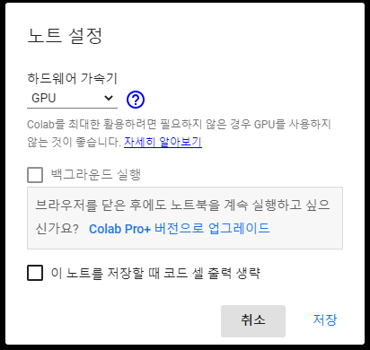
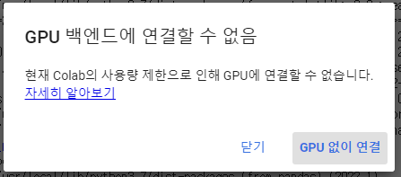
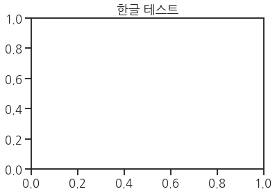
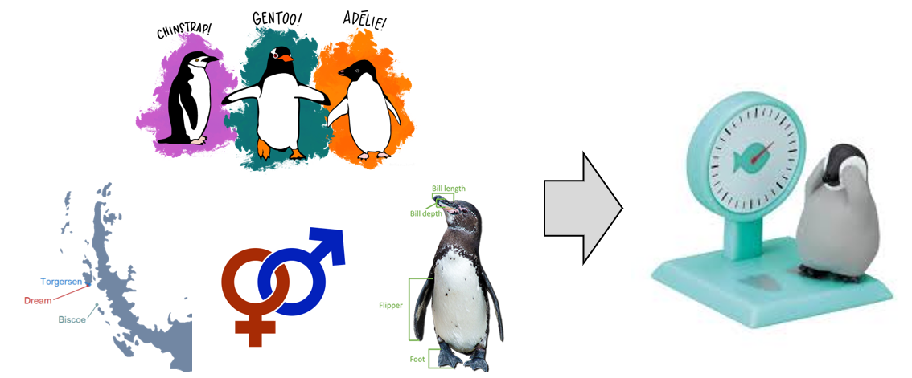
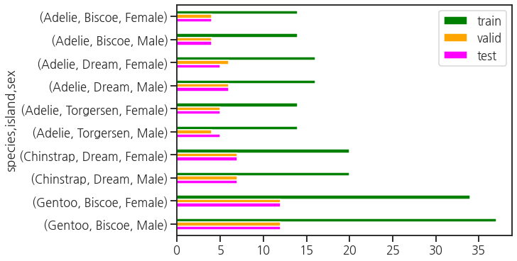
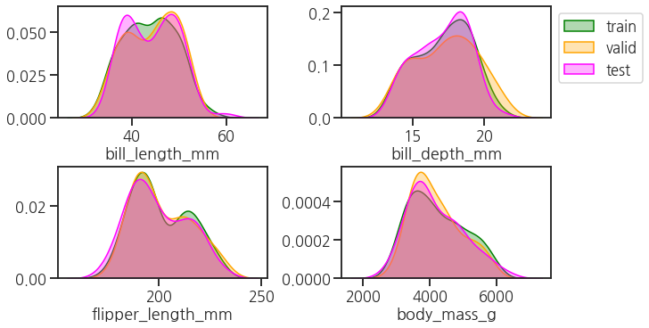

- PyTorch는 현재 가장 인기있는 딥러닝 라이브러리 중 하나입니다.
- 학습 세부 사항을 지정하기 위해 Callback으로 다양한 기능을 지원합니다.
- skorch는 PyTorch를 scikit-learn과 함께 사용할 수 있게 해 줍니다.
- skorch도 PyTorch callback을 이용할 수 있습니다.
- 글이 길어 세 개로 나눕니다.
- 첫 번째로, 데이터를 준비하는 과정입니다. 분할까지 확인합니다.
1. 환경 설정
1.1. Colab 환경 설정
먼저, Google Colab에 접속하셔서 노트북을 만들고 GPU 사용 설정을 합니다.
메뉴에서 [런타임] ▶ [런타임 유형 변경] ▶ [하드웨어 가속기]: GPU 설정을 선택합니다.
간혹 GPU를 할당할 수 없다는 메시지가 나오기도 하지만 GPU 없이 사용을 선택해도 됩니다.
데이터셋과 우리가 만들 딥러닝 구조가 깊지 않아 CPU로도 충분히 빠른 결과를 볼 수 있기 때문입니다.

- 이 밖에, Colab에서는 크게 두 가지 설정을 합니다.
- Matplotlib 버전을 3.2.2에서 3.5.x로 업그레이드를 하고,
- 한글을 쓸 수 있도록 설정을 합니다.
코드 보기/접기
1
2
3
4
5
6
7
8
9
10
11# Step 1. Matplotlib 업그레이드
!pip install matplotlib -U
!pip install seaborn -U
!pip install pandas -U
# Step 2. 한글 설치 및 사용 설정
!apt-get -qq install -y fonts-nanum
!fc-cache -fv
!rm ~/.cache/matplotlib -rf
# Step 3. 셀 실행 후 런타임 재시작1
2
3
4
5
6
7
8
9
10
11
12
13
14
15
16
17
18# Step 4. seaborn 환경 설정
import seaborn as sns
sns.set_style("ticks")
sns.set_palette("colorblind")
sns.set_context("talk")
# Step 5. 한글 글꼴 설정
import matplotlib.pyplot as plt
plt.rcParams['font.family']=['NanumGothic', 'sans-serif']
plt.rcParams['axes.unicode_minus'] = False
# 한글 설정 확인
%matplotlib inline
plt.title("한글 테스트")
plt.show()
1.2. 필수 라이브러리 & 시각화 기본 설정
- numpy를 비롯한 필수 라이브러리를 불러옵니다.
1
2
3
4
5import numpy as np
import pandas as pd
from copy import deepcopy
import pickle
from tqdm.auto import tqdm
- 시각화 관련 설정도 미리 합니다.
- label과 title 등에 들어갈 font 속성을 미리 설정하고,
- 이후 train, validation, test 데이터와 결과 출력 단계에서 사용할 색을 지정합니다.
1
2
3
4
5
6
7
8
9
10# font properties
plt.rcParams["mathtext.fontset"] = "cm"
font_label = {"color":"gray"}
font_title = {"color":"k"}
font_metrics = {'color':'k', 'fontsize':"medium"}
# colors
c_train = "green"
c_val = "orange"
c_test = "magenta"
1.3. PyTorch 사용 준비 & Random Seed
- PyTorch 관련 라이브러리를 불러오고, GPU를 사용할 준비를 합니다.
- 일단 당장 필요한 것들만 import해놓고 나중에는 그 때 그 때 필요한 것을 추가로 import할 것입니다.
- GPU를 사용할 수 없는 환경이라면 CPU를 사용하도록 설정됩니다.
1
2
3
4
5
6
7
8
9
10
11
12
13
14
15
16
17# PyTorch 라이브러리
import torch
from torch import nn
from torch import optim
# GPU 사용 설정
if torch.cuda.is_available():
for i in range(torch.cuda.device_count()):
print(f"# DEVICE {i}: {torch.cuda.get_device_name(i)}")
print("- Memory Usage:")
print(f" Allocated: {round(torch.cuda.memory_allocated(i)/1024**3,1)} GB")
print(f" Cached: {round(torch.cuda.memory_reserved(i)/1024**3,1)} GB\n")
else:
print("# GPU is not available")
device = 'cuda:0' if torch.cuda.is_available() else 'cpu'- 실행 결과: GPU로 Tesla T4가 할당되었습니다.
1
2
3
4# DEVICE 0: Tesla T4
- Memory Usage:
Allocated: 0.0 GB
Cached: 0.0 GB
- 실행 결과: GPU로 Tesla T4가 할당되었습니다.
- Random Seed도 미리 설정합니다.
- 재현성을 결정하는 생각보다 중요한 단계이므로 주의깊게 챙깁니다.
1
2
3rng = np.random.RandomState(0)
torch.manual_seed(0)
torch.cuda.manual_seed(0)
2. Data

- 펭귄의 종
species, 서식지island, 성별sex을 비롯해 - 세 가지 신체 치수
bill length,bill depth,flipper length로 체중body_mass을 예측하는 문제를 풀어보겠습니다. - 이번에는 GPU를 사용하는 법을 포함하여 Colab에서 실행합니다.
2.1. Dataset 불러오기
- seaborn에 내장된 데이터를 사용합니다.
- 결측치를 미리 제거합니다.
- 여기서는 생략했지만 실전에서는 결측치, 중복치, 이상치를 모두 따져봐야 합니다!
1
2df_peng = sns.load_dataset("penguins") # 펭귄 데이터셋
df_peng = df_peng.dropna() # 결측치 제거
2.2. $X$, $y$ 분할: $y$ = body_mass_g
- 문제에 맞게 펭귄 체중을 $y$로 놓고 데이터를 분할합니다.
1
2y = df_peng["body_mass_g"]
X = df_peng.drop("body_mass_g", axis=1)
2.3. training, validataion, testing set 분할
훈련, 검증, 시험에 쓰일 데이터를 각기 3:1:1로 분할합니다.
scikit-learn의
train_test_split기능을 사용하는데, 두 덩어리로만 나눌 수 있으므로 두 번에 걸쳐 나누어줍니다.먼저 Train : test를 4:1로 나누고, 다시 Train을 train : val = 3:1로 나눕니다.
random_state=rng를 넣어서 재현성을 확보하는 것을 잊지 맙시다._train,_val,_test가 붙은 세 가지 목적의 $X$, $y$ 데이터셋이 마련되었습니다.1
2
3
4
5
6from sklearn.model_selection import train_test_split
X_Train, X_test, y_Train, y_test = train_test_split(X, y, test_size=0.2, random_state=rng,
stratify=X[["species", "island", "sex"]])
X_train, X_val, y_train, y_val = train_test_split(X_Train, y_Train, test_size=0.25, random_state=rng,
stratify=X_Train[["species", "island", "sex"]])stratify매개변수에[["species", "island", "sex"]]를 넣어 층화 추출을 구현했습니다.층화 추출은 데이터를 분할할 때 categorical data의 class비율을 반영해 나누는 것을 의미합니다.
특정 class가 한 쪽에 쏠려 너무 많거나 적어지는 현상을 방지합니다.
categorical features`가 잘 분할되었는지 살펴봅니다.
1
2
3
4
5
6
7
8
9
10
11fig, ax = plt.subplots(figsize=(10, 5), constrained_layout=True)
cols_cat = ["species", "island", "sex"]
df_tmp = 0
for i, (X, col) in enumerate(zip([X_train, X_val, X_test], ["train", "valid", "test"])):
if isinstance(df_tmp, int):
df_tmp = pd.DataFrame(X[cols_cat].value_counts(), columns=[col]).sort_index()
else:
df_tmp = pd.concat([df_tmp, pd.DataFrame(X[cols_cat].value_counts(), columns=[col]).sort_index()], axis=1)
df_tmp.plot.barh(ax=ax, color={"train":c_train, "valid":c_val, "test":c_test}).invert_yaxis()
- y축 눈금에 species, island, sex 조합이 나열되어 있습니다.
- 모든 섬에 살고 있는 Adelie 펭귄과 Dream에만 살고 있는 Chinstrap, Biscoe에만 살고 있는 Gentoo 펭귄이 보입니다.
- 각 조합에서 valid와 test가 거의 비슷하고 train은 이들의 3배입니다.
- 3:1:1로 골고루 잘 나뉘었습니다.
이번에는 numerical features
bill_length_mm,bill_depth_mm,flipper_length_mm,body_mass_g분포를 살핍니다.KDE plot을 통해서 전반적인 분포를 대략적으로 비교합니다.
$X$에 3개의 numerical feature가 있고 $y$에 하나가 있습니다. 한데 모아 보여줍니다.
1
2
3
4
5
6
7
8
9
10
11
12
13
14
15
16
17
18fig, axes = plt.subplots(ncols=2, nrows=2, figsize=(10, 5), constrained_layout=True)
cols_num = ["bill_length_mm", "bill_depth_mm", "flipper_length_mm"]
axs = axes.ravel()
# numerical X features
for ax, col in zip(axes.ravel(), cols_num):
for X, c in zip([X_train, X_val, X_test], [c_train, c_val, c_test]):
sns.kdeplot(x=col, data=X, ax=ax, fill=True, alpha=0.3, color=c)
ax.set_ylabel("")
# y feature
for y, c in zip([y_train, y_val, y_test], [c_train, c_val, c_test]):
sns.kdeplot(y, ax=axes[1, 1], fill=True, alpha=0.3, color=c)
axes[1, 1].set_ylabel("")
axes[0, 1].legend(handles=axes[1, 1].collections, labels=["train", "valid", "test"],
loc="upper left", bbox_to_anchor=(1, 1))
training, validation, testing set에 모든 변수가 비슷하게 분포하여 크게 치우친 면이 없습니다.
이정도 되면 웬만큼 믿고 학습에 투입할 수 있을 듯 합니다.
$X$와 $y$간의 상관관계만 있다면 좋은 성능을 얻을 수 있을 것입니다.